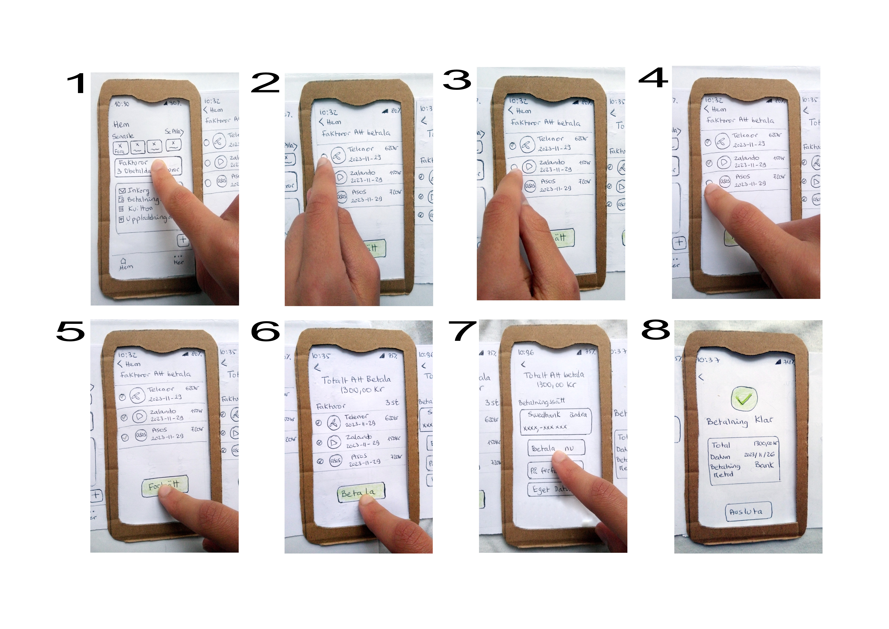
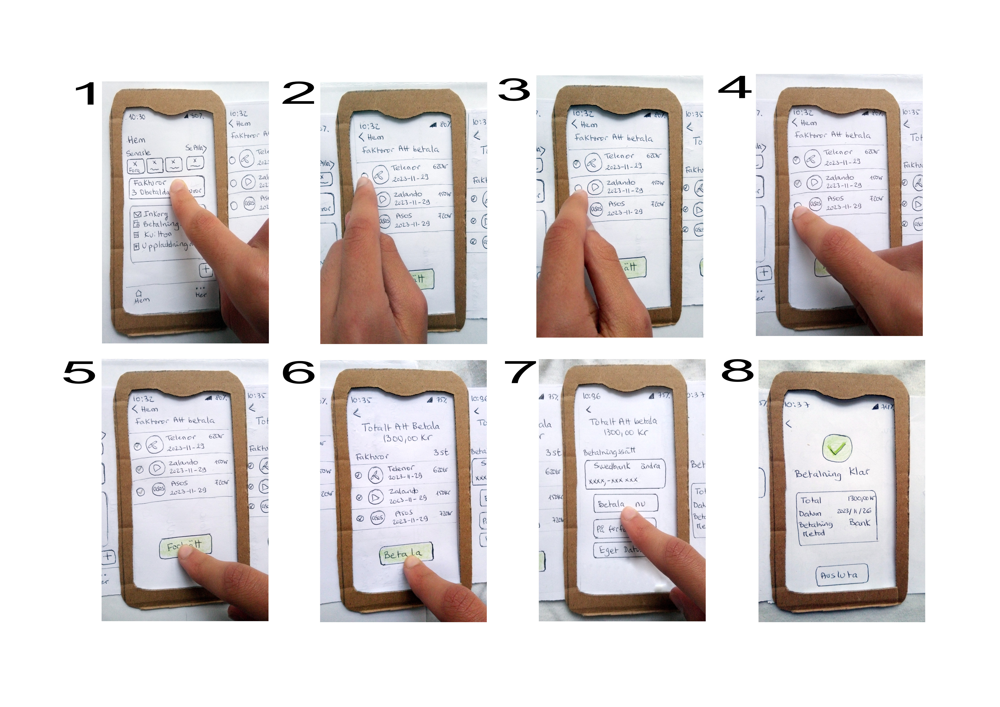

Kivra: UX/UI Analysis & Improvement of Concept
- UX Research
- Wireframing
- Prototyping
- User Testing
- Visual Design
- Interaction Design
- Responsive Design
An analyse of Kivras usability that leads to a designkoncept and an interactive prototype with new added feautures.
My role: UX/UI Designer
Tools: Figma, Pens & Papers
Challenge
To analyze Kivra to identify weaknesses and strengths in usability and functionality.
- The analysis showed a need for simpler navigation and clearer features.
- Opportunities to improve user flow and reduce complexity were identified.
Process
The design process followed these steps:
- Analysis
- →
- Sketches
- →
- Prototype
- →
- Concept
Solution
Sketches & Ideas

 

Early sketches exploring different navigation options.
Interactive Prototype
The prototype demonstrates how the design solves user problems and improves flow.
Peer Review
Constructive feedback from fellow students on analysis, design exploration, and elevator pitch.
- Focus on what is good and suggestions for improvement.
- Avoid only confirming comments.
- Use course literature to support feedback.
Reflection
The project provided valuable practice in moving from analysis to interactive prototype and taught me the importance of user-centered design.
See more details: https://digitaldesign.padlet.org/fauziaben_sliman0026_1/id102i_milstolpe-2-ijsxkne858vd4pe1